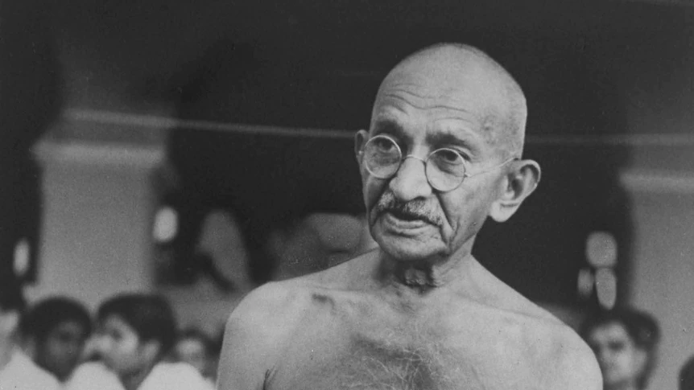

Week 2: Team Dynamics#
Overview#
In this second studio, you will meet you team and together we will all investigate team dynamics including managing teams and concepts for effective teamwork, providing a solid framework to develop your projects throughout the semester. We will also give some foundations on how to run a meeting.
We will address the following activities and exercises in studio 2.
Getting to know your team
Team values and their purpose
How to identify and ratify team values
Ratifying team values into a team contract
[ ]
Exercise 1: Meet your team#
⏱️ 30 minutes - Class
Devices closed for this exercise
Your legends will allocate your teams in the studio. Once you meet your team, sit together at a table.
Exercise 2: TimeGuessr Team-building exercise#
⏱️20 minutes - Group
Devices required for this exercise
TimeGuessr is a game where (built on the popular GeoGuessr game) where you need to specify in what year and which location are particular photo has been taken.
You will play this as a team in today’s studio to start working as a team.
In your team, choose one person to keep their laptop open for the task. Then, do the following steps:
Go to the TimeGuessr daily challenge
Solve the five tasks. Your legend will guide you.
Record your final score after the fifth task.
Which team wins?
Take a break#
⏱️ 10 minutes
Exercise 3: Identifying and Ratifying Team Values#
⏱️ 10 minutes - Class
Devices closed for this exercise
Your beliefs become your thoughts. Your thoughts become your words. Your words become your actions. Your actions become your habits. Your habits become your values. Your values become your destiny. - Mahatma Gandhi (1869 - 1948)

Values underpin how we work and interact with others.
Mahatma Gandhi, the Indian lawyer, anti-colonial nationalist and political ethicist, was able to use his understanding of law, culture and the human psyche lead to develop a deep mastery of shared values and leverage that knowledge to connect a nation together.
Simon Sinek is an American leadership and teams expert. In the studio, we will watch the following two short videos where Simon gives some high-level observations:
Sinek identifies two critical team values: belief (trust) and support (encourage). He also makes an important observation about making values verbs so they can become actionable. Specifically, we should focus on observable behaviour as much as possible. That way, we can easily tell whether we are adhering to our team’s values.
A value such as ‘be thoughtful’ is not helpful, because it is difficult to tell whether someone is being thoughtful (except by referring to specific observable behaviour that demonstrates it). Instead, stating, “show up on time”, “email the team if we will miss a meeting” are easy to observe, and therefore, we can say whether we are adhering to the values”.
Tips: Avoid using nouns for your team values, instead think about actionable verbs.
Dimension Team Value Builder#
⏱️ 20 minutes - Group
Devices closed for this exercise
There are two problems you will solve with this exercise:
Identifying effective values for your team
Ratifying those values into a written contract (signing or giving formal consent to a contract or agreement)
Follow these steps to complete the exercise:
Select one group member either through volunteering or vote.
This group member will draw an 6x6 grid on paper or a whiteboard (ensure there is some space on the margins to write)
As a group, start brainstorming team values and writing them on the margins.
Once every member has thought of 6-10 values (as verbs), each member gets to choose any value written in the margin and write them in a single square in the grid (can be any square). Go around the group round-robin, allowing each member to place a value in the grid until the entire grid is filled.
Now, each team member should ‘vote’ on the values. You get exactly four votes: draw a tick on the two values that are most important to you, and a cross on the two that you find least important (even if you agree with them). The rest, leave blank.
Once every team member has voted, analyse the grid and decide on six core values. (Ticks are worth 1 point, cross worth -1 point; values are ranked by number of points)
Circle core values and rank them by number (1 for highest to 6 for lowest)
Once your group has completed the task, move onto the next task.
Ratification Process#
⏱️ 15 minutes - Group
Devices required for this exercise
With team values having been identified, chosen and ranked, discuss and write up a short 1 page sample of a team contract:
The contract should outline the standards that are expected to be met by all team members.
Use the core values to serve as a foundation for your contract.
You are free to come up with rules of conduct, conflict resolution, communication and other team obligations, but these are just examples.
If you are having trouble coming up with a team contract, do some research on team contract templates and adapt them to your needs.
Team contracts serve as insurance for team conflict resolution and issues. They may never be used in a cohesive and well integrated team, but are invaluable when issues arise.
If you are struggling, you can use the core values to serve as a foundation for the document. Remember, focus on verbs / behaviours.
Creating Effective Meetings#
⏱️ 20 minutes - Individual
The thought of meetings can send some people into existential dread, either through bad prior experiences or having to deal talking with people for an hour (or longer). Unfortunately, meetings have developed a bad reputation because they are often misused by management, administrators and leaders.

Universal Meeting Structure and Rules#
There is a generalised meeting structure that can be applied to any meeting to improve flow and ensure the meeting achieves all its objectives. Additionally, there are a set of specific general ground rules for meetings to guarantee meeting members and facilitator stay focused and on task.
Discussion: Universal Meeting Structure (Agenda)#
⏱️ 5 minutes - Class
Devices closed for this discussion
Purpose: What does you want to achieve in the meeting? Explicitly stating this will provide context before the meeting begins.
Participants: Who is expected to be there? Assign a chair (who will run the meeting) and a note-taker.
Discussion Points: What are the topics, issues or problems? Identify who will lead each discussion point.
Tip
Research shows that if you write the discussion point item on your agenda as what outcome you want from the meeting, it focuses the attendees. So instead of: “Prototype” or even “Discuss prototype features”, write the point as: “Identify which features we will prototype”.
Times: Assign a start time each item, and stick to it! If it is clear this needs more time, ‘park’ it until the end of the meeting, and defer to another meeting if you don’t have time at the end.
Action Items: Those things that need to be done after the meeting. These are things that should go on your team please, such as on Trello. So, an action item should say: who does what by when?
Supporting Documentation & Materials: Anything else you need; e.g. if you want to discuss how you are going to assign software features to be implemented by team members, have the list of features.her multimedia.
Every meeting type will be different, but in general these are the most critical requirements of a meeting. This structure is a suggestion and should be moulded to requirements.
Universal Meeting Rules#
⏱️ 5 minutes - Pairs
Devices closed for this discussion
Have a meeting chair: Someone should run the meeting.
Pre-publish an agenda: This ensures the smooth flow of the meeting and keeps it focused on required aims and goals. It should have at least:
Meeting start time.
A list of items to be discussed.
Start times for each specific item.
Meeting end time.
Start on time: If you start late, people will know they can show up late next time. To help with this:
Be early: It takes time to settle. If the meeting starts at 1100h, show up 2-3 minutes early so you can settle and prepare yourself.
Use a time-keeper: Someone needs to identify that time is nearly up for an agenda item.
Follow the agenda: Anything off-topic should be parked for later.
Use a “parking lot”: A “parking lot” is time at the end (if any) to discuss things that wew parked.
Assign actions: Whenever the attendees agree that something should be done, write down who does what by when and send this around.
Publish notes: Notes are not minutes. Minutes are usually a legal requirement and are done by professional stenographers. In short, notes are simply:
What was decided?
Who will do what and by when?
Continuously Improve: Periodically revisit how your meetings work and whether they are working well. Be adaptable and evolve.
Meeting Agenda Draft#
⏱️ 15 minutes - Team
Devices closed for this exercise
Now that you have an understanding of meeting types, a general meeting structure and general meeting rules, it is good practice to develop a draft meeting agenda for your first team meeting.
Your task:
Write an agenda for your next team meeting. Follow the structure from the section on the universal meeting structure.
Show your legend your agenda, and they will give feedback on what works and what doesn’t.
Refine your agenda based on the feedback.
Outside of the class, hold the meeting!
It takes just a few minutes to create an agenda, but it can make meetings that much more effective and far less mind-numbingly boring!
Exit ticket#
Your exit ticket for this week’s studio is to:
Show your legend your team values.
Show your legend your meeting agenda for your next meeting, including when you will have the meeting.
Bonus material#
Saving the world from bad meetings - David Grady#
🌐 https://www.youtube.com/watch?v=F6Qo8IDsVNg
Bad meetings make people miserable. Here are some ideas to stop it.